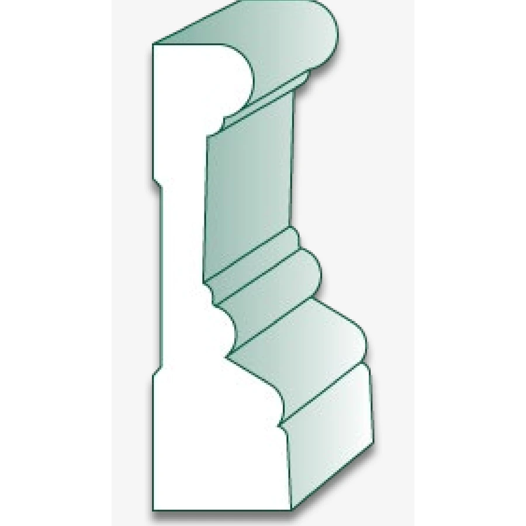
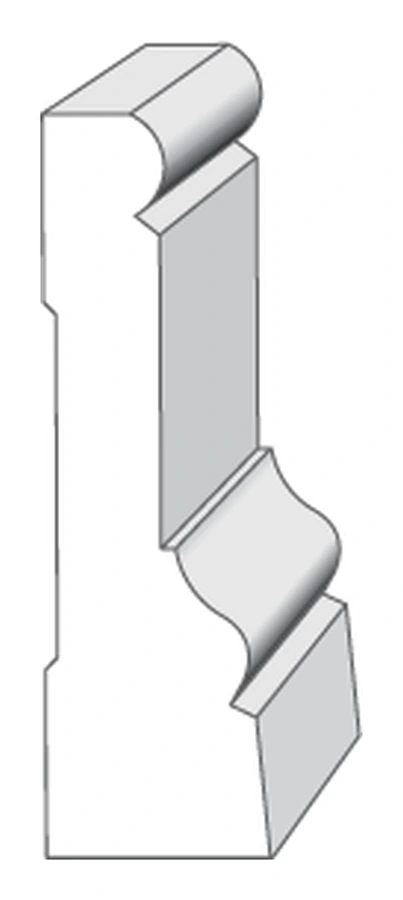
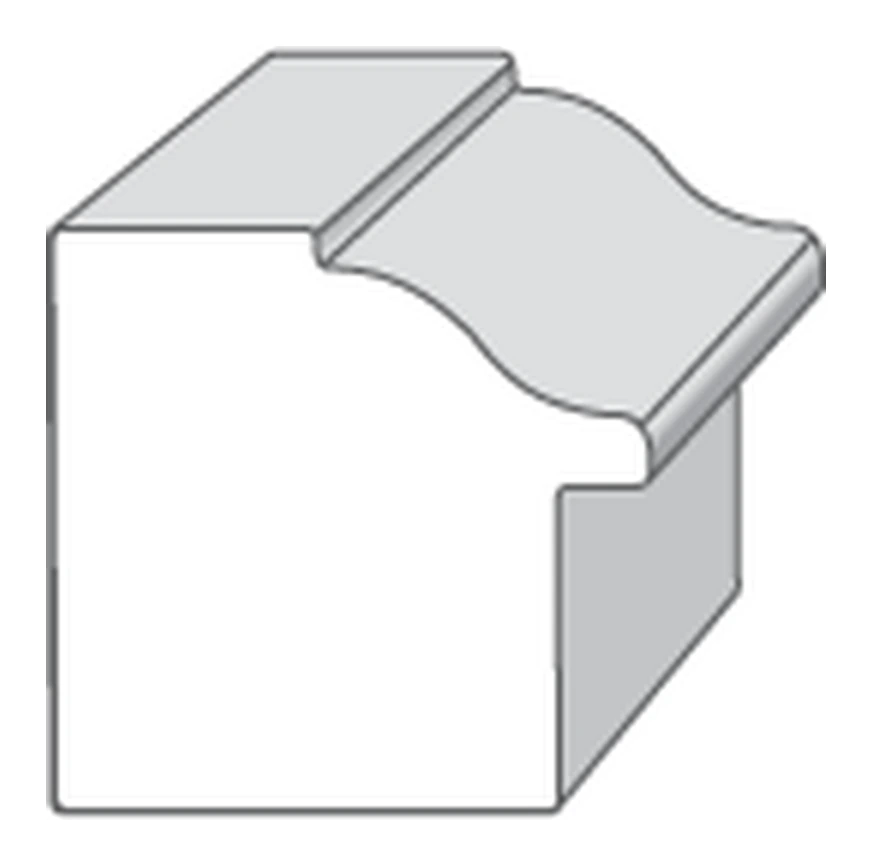
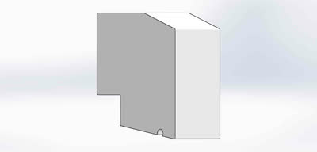
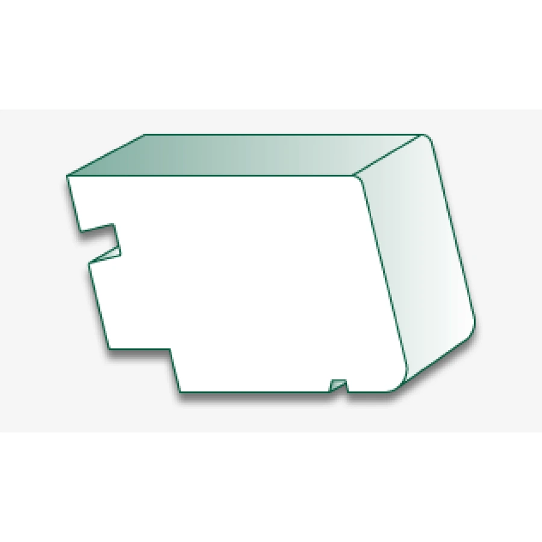
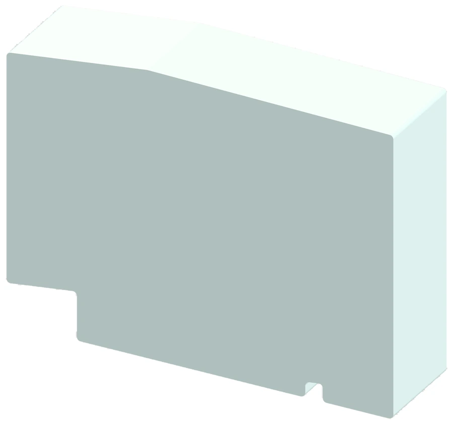
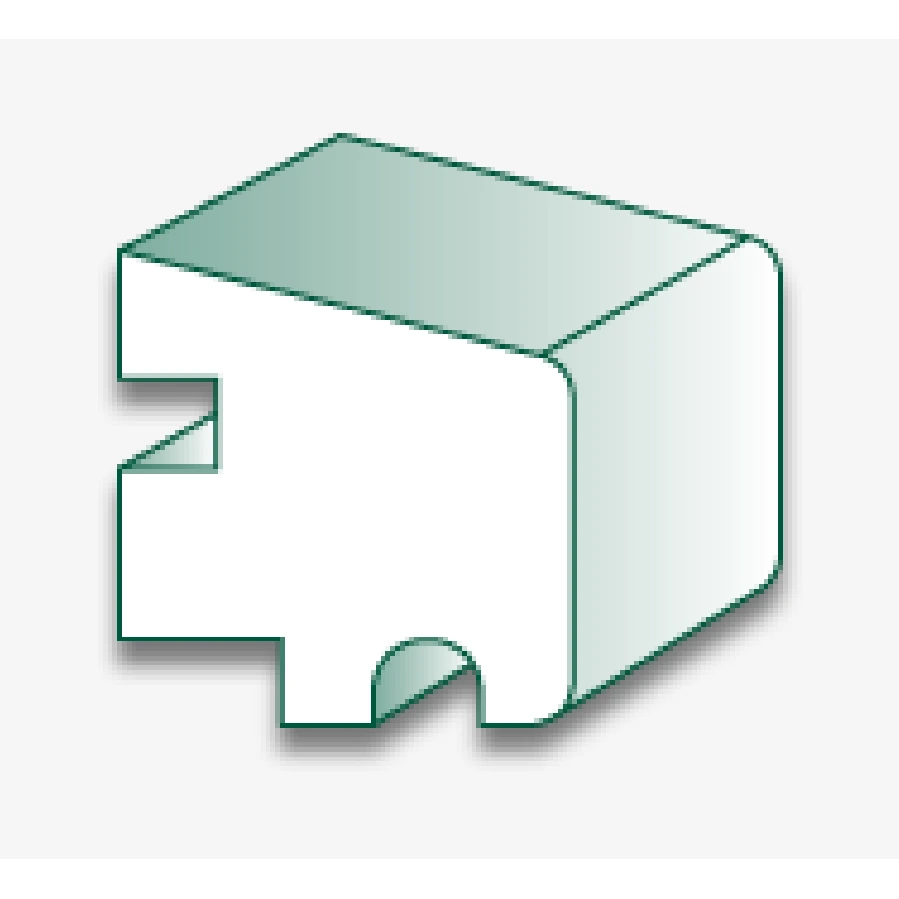
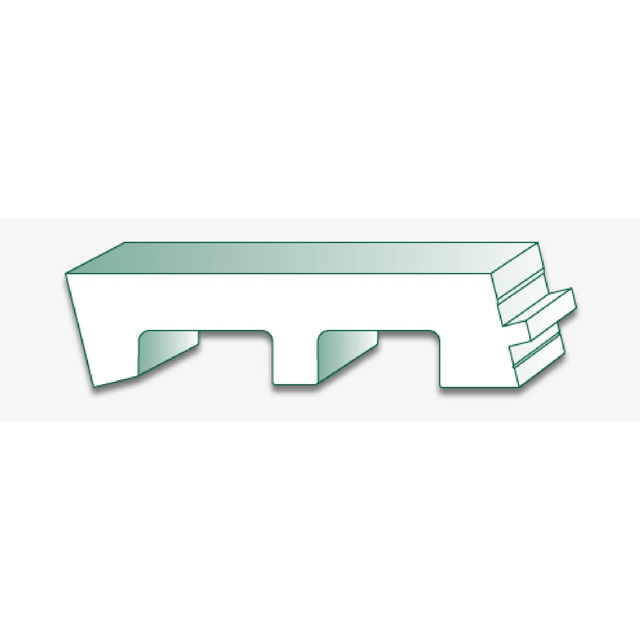

Think about the last time you pulled into your driveway and really looked at your house. Your eye probably went straight to the windows and the front door. They're the face of a home. The mouldings around them decide whether that face looks tired or looks cared for, finished, and welcoming.
The good news is that you don't need a full renovation to change how your house feels from the curb. The right casing, sill, and brickmould can do a lot of that work for you. Here's how to think it through.
Start With the Feeling You Want
Before you look at a single part number, picture the house you want to come home to.
A crisp colonial or a classic Cape usually looks best with clean, balanced casings and a traditional sill. A farmhouse wants something a little heavier and more substantial under the window. An older home with history deserves profiles that respect what the original builder had in mind.
When you know the feeling, the choices get much easier.
Casings: The Picture Frame
Casing is the moulding that frames the sides and top of a window or door. It's the part people notice first.
American Pro offers two casings that each run about 3 1/2 inches wide:
- Windsor Casing (WC1CTPVC) has a simple, timeless look that works on almost any style of home.
- Adam's Casing (WM97PVC) brings a little more shape and shadow for a more traditional, detailed finish.
Want the frame to feel richer? Add Backband (138BBPVC) around the outside edge of the casing. It's a small piece, but it adds depth and makes the whole window look more custom.
-

Windsor CasingWC1CTPVCShown in White -

Adam's CasingWM97PVCShown in White -

Backband138BBPVCShown in White
Brickmould: Built for the Front Door
Brickmould (WM180PVC) is the go to moulding around exterior doors and windows, especially where siding or masonry meets the frame. It's thick enough to give a door real presence, so your entry looks solid and inviting instead of flat.
If your front door is the first thing guests see, this is where a small upgrade can make you smile every time you walk up the steps.
Sills: The Detail That Grounds a Window
A window without a strong sill can look like it's floating. A good sill anchors it and finishes the look. American Pro makes several:
- Historical Sill (SILL7650PVC) and Large Historical Sill (SILL7435PVC) for homes that call for a classic, period look.
- Farmhouse Sill (SILLFARMPVC), our heaviest sill profile, for a bold, substantial look under the window.
- Sill Nose (SILL7118PVC) and the 5 1/4 inch Sill Extender (SILL7117PVC) when you need to finish or extend a sill.
-

Historical SillSILL7650PVCShown in White -

Large Historical SillSILL7435PVCShown in White -

Farmhouse SillSILLFARMPVCShown in White -

Sill NoseSILL7118PVCShown in White -

5 1/4 inch Sill ExtenderSILL7117PVCShown in White
Don't Forget the Drip Cap
Drip Cap (WM197PVC) sits above windows and doors and helps send water out and away from the top of the frame. You hardly notice it, but it's one of those quiet details that lets you rest easy when a storm rolls through.
Peace of Mind That Lasts
Windows and doors take a beating from rain, snow, and sun. Our cellular PVC mouldings won't rot, split, or absorb moisture, so the look you choose today keeps looking good for years. That means fewer weekends spent scraping and patching, and more time enjoying your home.
Lengths and Profiles Made for Your Job
This is where we're different from other PVC moulding makers:
- Custom lengths. Our standard length is 16 feet, and we can run any custom length you need, so you get fewer seams across a wide opening or tall entry.
- A deep catalog. We offer 34 profiles across seven product families, from crowns to sills to beadboard.
- Custom profiles. Restoring an older home and can't find a match? Send us a drawing, photos, or a cut section and we can tool the profile in house.
- Made in America. Every profile is made by American Pro, a Brand of Patwin Plastics.
See It Before You Choose
Choosing a profile from a photo is hard. That's why we'll mail you free hand samples of any standard profile, so you can hold the casing up to your window, see the shadow lines, and feel the finish before you decide.
Ready to give your windows and doors the frame they deserve? Request free samples on our mouldings page, or talk to our team at 1-877-442-6776 or sales@americanprobp.com. We're happy to help you pick the right profiles for your home.